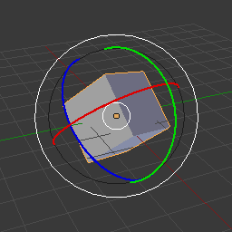
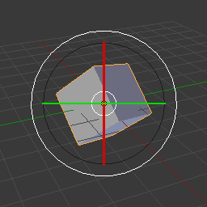

Орієнтації трансформацій -- Transform Orientations¶
Орієнтир
| Mode: | Object and Edit Modes |
|---|---|
| Panel: | |
| Hotkey: | Alt-Spacebar |
Transform Orientations affect the behavior of Transformations: Location, Rotation, and Scale. You will see an effect on the Object Manipulator (the widget in the center of the selection), as well as on transformation constraints, Axis Locking.
For example, when you press X, during the execution of the operation, it will constrain the transformation to the Global X axis. But if you press X a second time it will constrain to your Transform Orientation's X axis.

Вибірник Орієнтації Трансформацій.
The Orientations options can be set through the Transform Orientation selector in a 3D View header, with Alt-Spacebar, or in the Transform Orientations panel in the Properties region.
In addition to the five preset options, you can define your own custom orientation (see Custom Orientations below).
Орієнтації¶
- Глобально -- Global
The manipulator matches the Global (or World) axis.
The Mini Axis in the lower left corner of the viewport, and the Grid Floor, shows the axes of world coordinate system.
- Локально -- Local
The manipulator matches the Object axis.
When an object is rotated, the direction of the Local manipulator matches to the object's rotation relative to the global axes. While the Global manipulator always correspond to world coordinates.
- Нормаль -- Normal
The Z axis of the manipulator will match the Normal of the selected element. If multiple elements are selected, it will orient towards the average of those normals.
In Object Mode, this is equivalent to Local orientation.
- Шарнір -- Gimbal
- Використовує поведінку Шарніра -- Gimbal, що може змінюватися залежно від поточного Режиму Обертання -- Rotation Mode.
- Огляд -- View
The manipulator will match the 3D View (viewport):
- Y: Up/Down -- Уверх/Вниз
- X: Left/Right -- Вліво/Управо
- Z: Towards/Away from the screen
Приклади¶

Default cube with Global transform orientation selected. |

Rotated cube with Global orientation, manipulator has not changed. |

Local orientation, manipulator matches to the object's rotation. |

Normal orientation, in Edit Mode. |

Gimbal transform orientation. |

View transform orientation. |
{kind=link}
{kind=link}
Власні Орієнтації -- Custom Orientations¶
Орієнтир
| Mode: | Object and Edit Modes |
|---|---|
| Panel: | |
| Hotkey: | Ctrl-Alt-Spacebar |
You can define custom transform orientations, using object or mesh elements. Custom transform orientations defined from objects use the Local orientation of the object whereas those defined from selected mesh elements (vertices, edges, faces) use the Normal orientation of the selection.
Transform Orientations panel.
The Transform Orientations panel, found in the Properties region, can be used to manage transform orientations: selecting the active orientation, adding ("+" icon), deleting ("X" icon) and rename custom orientations.
The default name for these orientations comes from whatever you have selected. If an edge, it will be titled, "Edge", if an object, it will take that object's name, etc.
Створення орієнтації¶
To create a custom orientation, select the object or mesh element(s) and press Ctrl-Alt-Spacebar, or click the "+" button on the Transform Orientations panel in the Properties region.

Create Orientation operator panel.
Just after creating the orientation, the Create Orientation Operator panel gives a few options:
- Ім'я -- Name
- Текстове поле для іменування нової орієнтації.
- Вжити Огляд -- Use View
- Нова орієнтація буде вирівняна по простору Огляду.
- Вжити після створення -- Use after creation
- При увімкненні залишить новостворену орієнтацію активною.
- Перезаписати попереднє -- Overwrite previous
- Якщо новій орієнтації дано вже наявне в іншої ім'я, то це дасть перезапис попередньої орієнтації з таким же іменем, проте, якщо опція «Перезаписати попереднє» -- Overwrite previous вимкнена, то до імені новостворюваної орієнтації з таким же ім'ям буде додано суфікс з метою запобігання перезапису вже наявної орієнтації.
Вирівняти за Орієнтацією Трансформацій -- Align to Transform Orientation¶
Орієнтир
| Mode: | Object and Edit Modes |
|---|---|
| Menu: |
Вирівнює (обертає) виділені об'єкти так, щоб їх локальна орієнтація відповідала активній орієнтації трансформацій, що задана на панелі «Орієнтації Трансформацій або вибірником «Орієнтація» -- Orientation на Панелі Оператора.